AI Academy · Level 3 · Grade 8 · Week 1 · Student lesson
Predictive and Generative AI
Learn to understand, design, build, test and explain AI systems responsibly.
Project: Verified Study Buddy
Before you start
AI-2 Week 27: identify retrieval, prediction and generation within one pipeline.
Plan time to read, investigate and explain. Keep predictions separate from observations.
Student lesson · 1 of 14
Your mission
Your learning target
I can distinguish discriminative prediction from generation by inspecting the requested output.
I can calculate an empirical next-token distribution from counted continuations.
I can separate next-token fit from factual support and downstream usefulness.
Remember before reading
Close your notes first. A rough first answer helps us choose the right starting point; it is not a score for your ability.
Without opening the old lesson, explain one key idea from Capstone Expo. Give an example and a mistake that the idea helps you avoid.
After trying, check the relevant lesson or ask your teacher. Change the part of your explanation that the evidence shows was wrong.
Week 1: Predictive and Generative AI
Prediction estimates a target; generation samples a new structured output.
CREATOR MISSION
Classify systems and explain the output space for each.
Creator name and date:
Readiness for the connected explanation
What is the difference between a model prediction and evidence that a statement is true?
This week’s end goal
By the end, I can identify generation and prediction objectives without confusing either with verified truth.
Student lesson · 2 of 14
Notice the evidence
PICTURE STORY
Notice → Predict → Explain
Begin with visible evidence. Do not explain more than the picture and information support.
MYSTERY
The learners must use predictive and generative ai to solve a problem. What information do they have? What decision or calculation do they make? What would count as evidence that it worked?
Three observations (what you can point to):
My prediction and the clue supporting it:
A closer explanation
A classifier might map a message to the label request or report. A text generator instead produces a sequence, predicting a distribution over the next token given a prefix. Both make predictions, but the training targets and permitted outputs differ. One application can combine generation with a classifier, retrieval and human approval. Calling a whole product “generative” does not describe every component.
The objective defines what training attempts to fit. Next-token fit rewards matching observed continuations; it does not directly certify that an answer is true, well sourced or permitted. A fluent completion is still an output to evaluate against the task.
Student lesson · 3 of 14
See how it works
VISUAL MECHANISM
Input → Process → Output
Trace the information. At each stage, ask what changed and how you could test it.
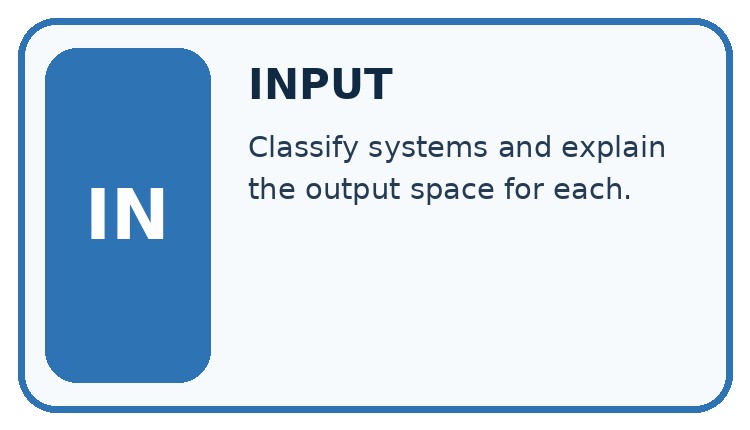
↓
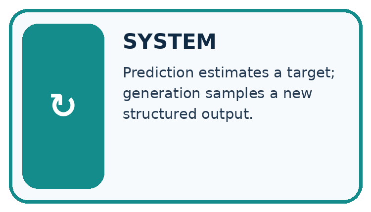
↓
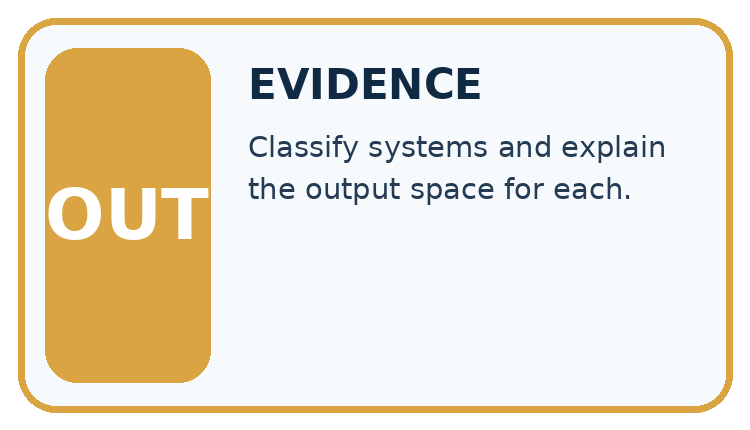
Which stage could fail even when the other two are correct? Explain:
A closer explanation
| Prefix | Continuation | Count |
|---|---|---|
| The marker is | red | 6 |
| The marker is | blue | 3 |
| The marker is | green | 1 |
There are ten observed continuations. The empirical probabilities are red 6/10 = 0.6, blue 3/10 = 0.3, green 1/10 = 0.1. They are nonnegative and sum to 1. A simple frequentist classroom model uses these relative counts as its next-token distribution. These probabilities describe the supplied corpus counts, not the current colour of any actual marker.
Keep the evidence roles separate
Connect the picture and the explanation
Point to the input, the deciding step and the result in this week’s visual. Explain the same step in ordinary words. A picture helps when you can say what each part represents.
Student lesson · 4 of 14
Compare the cases
CASE GALLERY
Four Tests, Four Kinds of Evidence
A system is not understood until it survives more than one comfortable example.


NORMAL CASE: predict and name evidence. BOUNDARY CASE: predict and name evidence.


MISSING INFORMATION: predict and name evidence. TRANSFER CASE: predict and name evidence.
Which case is most likely to reveal a hidden assumption? Why?
Change one thing in the pictured case
Change: The classifier instead predicts history while N and the draft stay unchanged.
Prediction: The category prediction changes, but the same unsupported draft claim still needs checking.
Reason: Stages can fail independently; one result does not validate another.
Student lesson · 5 of 14
Words that unlock the idea
VOCABULARY LAB
Words You Can Use to Reason
A definition matters when you can recognize the idea, use it, and contrast it with a near-miss.
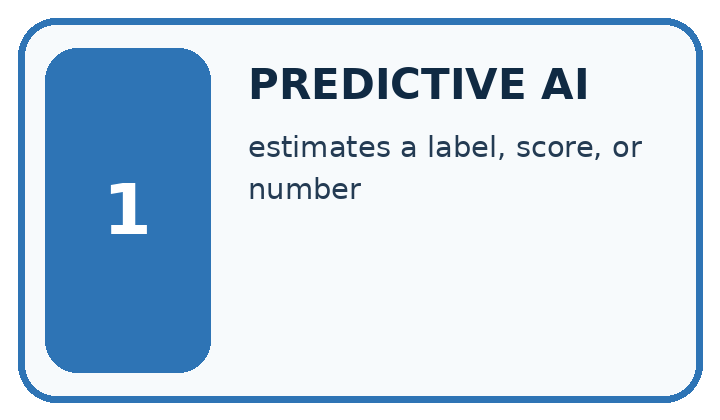
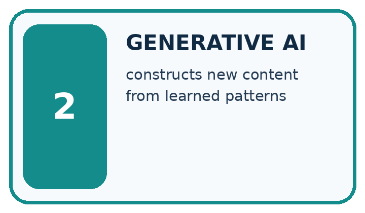
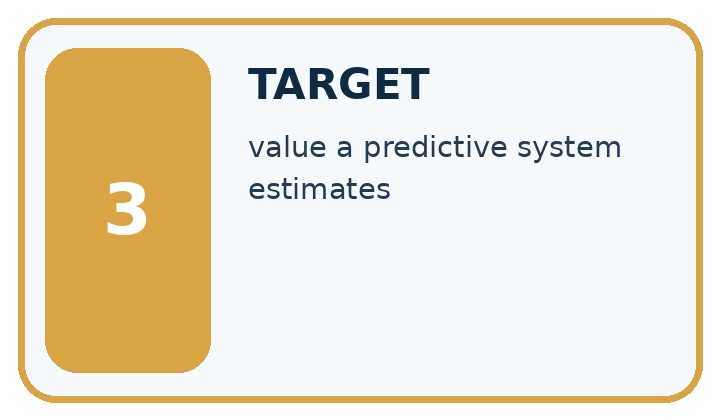
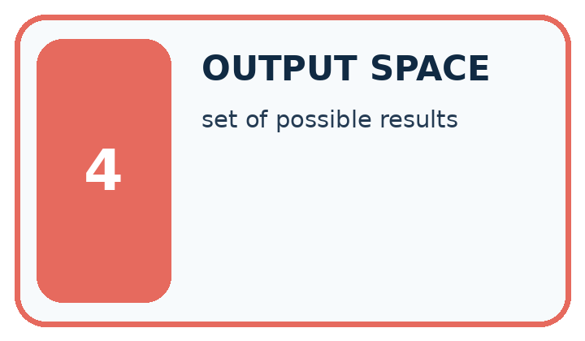
| Word | My own example | Not this / boundary |
|---|---|---|
| predictive AI | AI used to estimate a target such as a category, number or future outcome from inputs. | |
| generative AI | AI that produces new content such as text, images or audio rather than only selecting a category. | |
| target | The category, value or outcome a prediction task is intended to estimate. | |
| output space | The set or range of outputs a system can produce for a task. |
Words used in the closer explanation
| Word | Meaning |
|---|---|
| Generative objective | A training aim concerned with producing or modelling possible outputs |
| Discriminative objective | A training aim mapping inputs to a specified target such as a label |
| Conditional distribution | Probabilities for alternatives given stated information |
| Autoregressive generation | Producing a sequence one next item at a time using preceding items |
Student lesson · 6 of 14
Follow a worked example
WORKED EVIDENCE
Reason Step by Step
Predict first. Then check each step. A correct answer without visible reasoning is incomplete evidence.
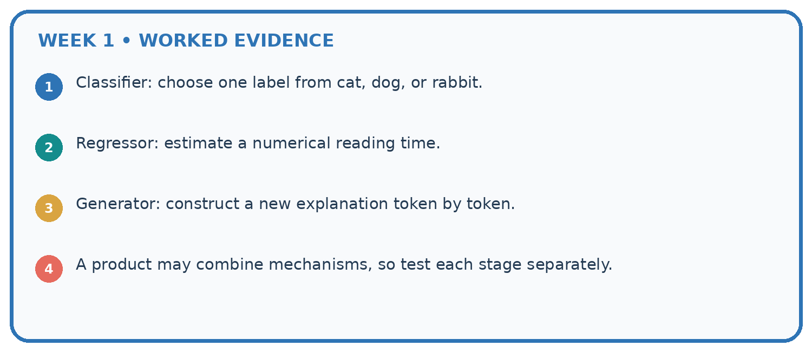
1. Classifier: choose one label from cat, dog, or rabbit.
2. Regressor: estimate a numerical reading time.
3. Generator: construct a new explanation token by token.
4. A product may combine mechanisms, so test each stage separately.
Recalculate, retrace, or restate the reasoning in your own representation:
CHECK Did the evidence answer the exact question? Did the total, path, or source record stay consistent?
A closer explanation
After producing red, the next step conditions on the expanded prefix “The marker is red”. A second table might give an end token probability 0.8 and the token today probability 0.2. A generated sequence can stop at the end token or continue. Do not reuse the first-step table unchanged after adding a token unless the model explicitly ignores the new prefix.
A separate classifier can return red as a label from an image; that is a different input and target from continuing text. A downstream evaluation asks whether the system correctly reports the current marker. It must include ground truth or sources and appropriate failure handling, not just count plausible phrases.
Learn from the worked case
Cover the result before checking it. Say what is given, choose the procedure, and follow one step at a time. Then uncover the result and explain your first mismatch. Ask why a step is allowed, not only what number it produces.
A pictorial worked case: Predictive and Generative AI
A fictional learning tool first classifies a question, then drafts an answer from a supplied note.
The facts we will use
A fitted classifier labels a question science; its training used labelled questions.
Approved note N: evaporation changes liquid water into water vapour. A generator drafts: “Water evaporates into vapour and always disappears forever.”

Read the picture one step at a time
Why this result follows
Classification predicts a category under a trained mapping. Generation produces a sequence of words under a language objective. Supplying a note can support factual grounding, but the draft still requires claim-level checking. The category being correct does not prove every sentence in the answer is correct.
What this example does not establish
This example does not expose a real model’s architecture or prove that source-fed generation always stays grounded.
Student lesson · 7 of 14
Find and repair a mistake
ERROR DETECTIVE
Compare → Diagnose → Repair
Do not patch the answer. Find the earliest unsupported assumption, wrong step, or weak evidence.
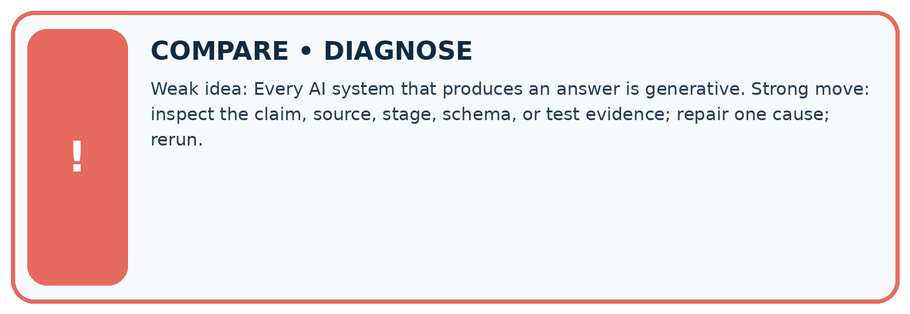
| Evidence record | Expected | Actual | Likely cause / next test |
|---|---|---|---|
| normal case | works | ||
| boundary case | stated rule | ||
| missing input | safe response | ||
| fresh transfer | generalizes |
Repair one cause. Why is this repair better than changing several things?
A closer explanation
Keep three questions separate: did the model fit continuation data; did the output satisfy the requested format or task; and are factual claims supported? A system that drafts a fictional description has different criteria from one reporting a live measurement. Record the source and time when a claim refers to changing conditions. No AI account is needed to reason about these distinctions.
Student lesson · 8 of 14
Practise together
LOGIC STUDIO
Specify Before You Run
Prompts, schemas, retrieval, tool calls, and code are inspectable parts of one AI product.

SET task, audience, constraints, output_schema LOAD approved_context or retrieval_result CALL model or allowed_tool VALIDATE fields, claims, citations, and safety IF evidence missing: ask, retrieve, or abstain RETURN useful output + source trail + limitations
Trace one input. Which line changes the state or chooses a path?
A closer explanation
Supported case: the prefix “The door is” is followed in a tiny corpus by open four times and closed once. The empirical probabilities are 4/5 and 1/5. A current sensor reports closed. Selecting the most frequent continuation open would be plausible under the corpus model but inconsistent with the sensor observation.
Practise with less help: Compute the distribution
Use workbook W2 for the connected example “Generative and predictive objectives”. First fill the input and rule boxes. Try the middle steps before asking for a hint. After a hint, try the next step yourself.
| Plan | Do | Check |
|---|---|---|
| What is given? Which rule or procedure applies? | Record each intermediate step. | Does the result follow? What remains unknown? |
Explain your trace to a partner. Your partner points to one step to check. Swap roles on the next case. Each person writes their own explanation.
Check your reasoning
Use the worked case for Generative and predictive objectives. Proposed explanation: “Generative models do not predict”. Decide whether this explanation is supported. Point to the step or supplied fact that decides; explain your repair if needed.
Answer on your own before discussion. If you are unsure, say which step you need help with.
Explain the picture
Identify the first unsupported claim and explain what source would be needed before asserting it.
This is supported practice. Keep the separately named independent case for an attempt before feedback.
Student lesson · 9 of 14
Run the investigation
EVIDENCE LAB
Predict → Test → Record → Explain
Keep expected and actual results separate. Surprises are useful data when recorded honestly.
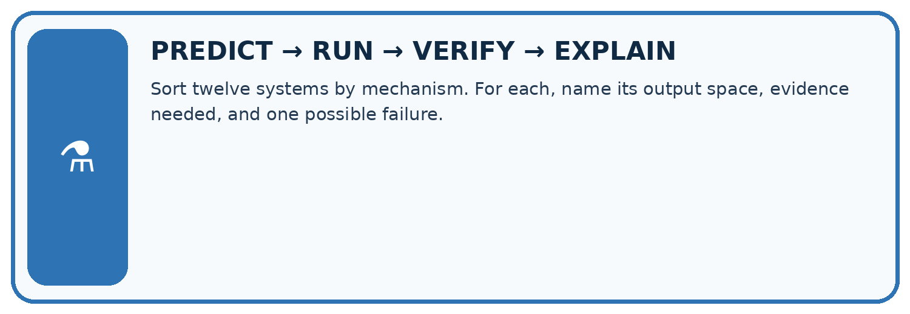
Sort twelve systems by mechanism. For each, name its output space, evidence needed, and one possible failure.
| Test / input | Prediction | Actual | Evidence / calculation | Change or keep? |
|---|---|---|---|---|
| normal | ||||
| boundary | ||||
| missing | ||||
| fresh transfer |
What did the hardest test teach you that the normal test did not?
Plan → try → check
Before trying: what do I expect, and why? While trying: which step could first go wrong? Afterwards: what did I actually observe, and what should change? Keep “not run” if you only traced the procedure.
Student lesson · 10 of 14
Build your understanding
MASTERY
From Knowing the Word to Owning the Idea
Move upward only when you can produce evidence without copying the worked example.

1 • NAME: Define the concept without repeating the textbook.
2 • TRACE: Show the information, state, branch, calculation, or evidence path.
3 • APPLY: Solve a different example independently.
4 • CHALLENGE: Find a boundary case, counterexample, or unfair outcome.
5 • EXPLAIN LIMITS: Say when the result should not be trusted or used alone.
My strongest evidence of independent understanding:
Student lesson · 11 of 14
Connect your project
CUMULATIVE PROJECT
Verified Study Buddy
Every week adds one inspectable piece. The system must show how it reached a result.
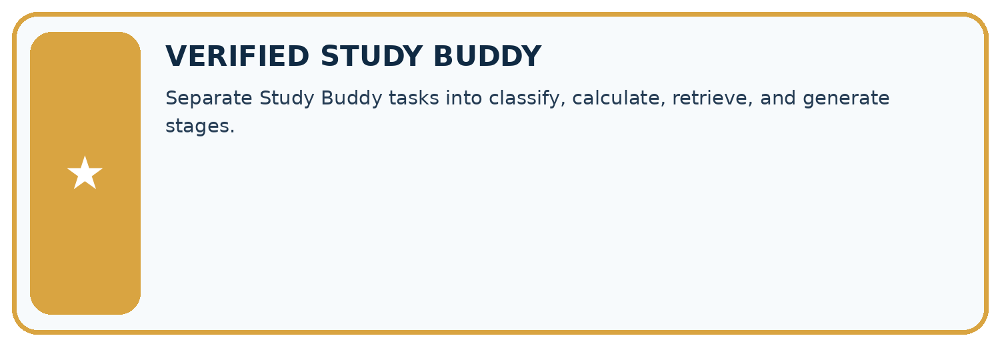
THIS WEEK’S CHECKPOINT Separate Study Buddy tasks into classify, calculate, retrieve, and generate stages.
SYSTEM MAP Learner need → prompt/schema → approved sources/retrieval → model/tool → structured answer → verification → human decision
What will you add, change, or verify in the project this week?
What should remain under human control?
RESPONSIBLE DESIGN Collect only necessary information. Show uncertainty and limits. Never confuse fluent output with verified truth.
Evidence for your project
For the Verified Study Buddy, separate routing predictions, source retrieval and generated explanations in its evidence record.
Student lesson · 12 of 14
Show what you know
INDEPENDENT MASTERY PROOF
Explain • Transfer • Test • Defend
Complete this page without copying the worked example. Your reasoning matters more than decoration.
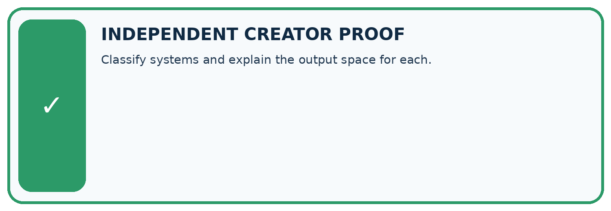
CHALLENGE Classify systems and explain the output space for each.
1. My fresh example, trace, calculation, or design:
2. My evidence that it works (include a boundary or missing-data case):
3. One limitation, fairness concern, or situation needing human review:
SELF-CHECK □ I explained the mechanism □ I used evidence □ I tested a fresh case □ I named a limitation □ I can answer ‘why?’
Student lesson · 13 of 14
Study a complete case
Week 1 Worked case
Use the supplied details to practise the weekly concept before attempting the independent question. This case extends the illustrated lesson.
The situation
A tool labels a question biology, writes a new question and computes 7 times 8.
The question
Identify each operation.
Worked explanation
Labelling selects a category; generation creates text; calculation returns 56. Generated questions need factual and instructional checks.
Explain it in your own words
Which detail supports the answer, and why does it matter?
Trace the supplied case visually
Three outputs need three different checks
| Evidence or stage | Value or result |
|---|---|
| Classify | Select biology as a category |
| Generate | Compose a new question |
| Calculate | 7 times 8 equals 56 |
A tool labels a question biology, writes a new question and computes 7 times 8.
Identify each operation.
Labelling selects a category; generation creates text; calculation returns 56. Generated questions need factual and instructional checks.
Student lesson · 14 of 14
Try a new case independently
Independent case: Changed independent case
A system retrieves an approved Moon note, uses a trained classifier to predict reading difficulty, then writes a poem. Identify each mechanism and the evidence needed to check its output.
Attempt this case before feedback. Record any help. Earlier examples below are further practice; a case already practised with feedback cannot establish fresh transfer.
Week 1 Independent application
Close the worked explanation. Apply the idea to this different question without copying.
A system labels a message as spam. Another writes a new reply. Which task predicts a category and which generates content? Can the new reply contain a false fact?
My answer, with a trace, calculation or supporting evidence
Create and test
Change one relevant detail. Predict the result before testing. Include a boundary or missing-information case when it helps reveal a limit.
My changed input and expected result
Connect to your project
Separate Study Buddy tasks into classify, calculate, retrieve, and generate stages.
The evidence I will keep
Your teacher has the independent answer and scoring criteria. Complete the matching workbook week to keep your practice evidence together.
Transfer practice from the original programme
A study tool finds a paragraph, labels its difficulty and invents practice questions. Identify the three operations and one check for each.
Use feedback to improve
Attempt the independent case before hints. Record whether you worked alone, used a hint or followed a model. After feedback, fix the first unsupported step and explain why it changed. A later check uses a changed case, not a copied answer.